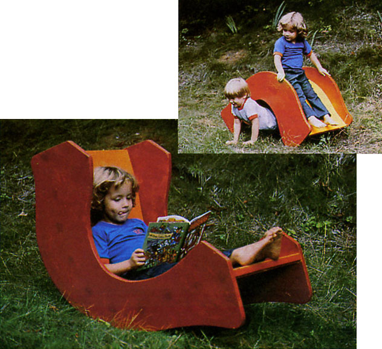
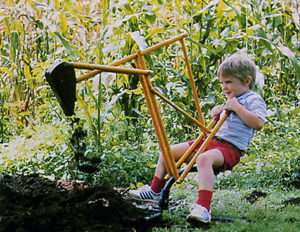
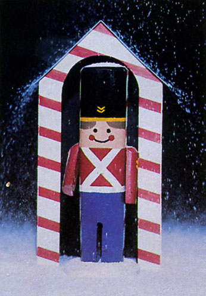

What's the holiday season without a wooden soldier or two to join the festivities? To make this pint-sized fusilier, you'll need a scrap of wood that measures 1-3/4" X 2" X 7-1/2", a second odd piece about 1/2" X 3" square, and a 2-1/4"-long section of broomstick or dowel.
Cut or sand the corners from the "body" block, round one end of the billet, and remove a slot-as shown-to simulate a pair of legs. The guardsman's arms are made by cutting the dowel lengthwise down its center, then sanding and beveling the two resulting pieces as indicated. To make the base, simply trim the 3" square of wood to form a circle, and smooth off its top edge.
Now, paint all the parts, tack the arms in place, and glue the figure to its stand. If you wish, you can also whip together-using a 10" X 20" piece of stiff cardboard and the scaleddown template we've provided-a simple guardhouse . . . which you can color as you see fit.
Click here to download the toy-parts template.
Click here to download the soldier construction details.
This three-way rocker may help keep you from going off yours during those "it's dark out already and there's nothing to do" doldrums that all too often seem to plague restless little ones over the course of the winter season. To make the multiple-use plaything, you'll need a 42"-square section of 3/4" plywood, a 32" X 48" piece of 1/4" plywood (make sure the panel's grain runs perpendicular to the four-foot dimension), ten 16" lengths of 1 X 2 (which you can buy in strips or cut yourself-to 3/4" X 1-1/2"-from wider boards), and the assorted hardware that's called for in our illustration.
Start by upscaling the pattern illustrated below on a large piece of paper to form a "life sized" template. Then transfer the twin shapes to your 42"-square sheet of 3/4" plywood as illustrated . . . and mark the positions of the necessary screw holes. With that done, cut out the two sides, clamp them together, and bore the holes in "two birds with one stone" fashion.
Scale:
1 Square = 1 inch
Next, secure the ten ribs-broad sides exposed-between the frame sides, using 1-3/4" wood screws (make sure the heads are countersunk slightly). Cut your remaining plywood board in half, against the grain, andusing glue and screwssecure the two resulting pieces to the upper and lower faces of the rib bed. (We held our sheets fast at one end with four countersunk 3/4" screws, then "walked" the panels into position, anchoring them where needed as we went along. Your version, of course, may need more or fewer fasteners than ours did, depending on the "formability" of your plywood.)
Finish the project by covering the screw holes With filler, giving all the surfaces a light sanding, and painting the plaything in your choice of bright colors. The triple-threat capability of this versatile toy will all but guarantee boredomfree afternoons among the youngsters in your household.
Click here to download the teeter-tot construction details.
Any junior hardhat on your Christmas list will re ally dig this gadget, once you've taken the few minutes necessary to size and assemble it. The materials include two 10' lengths of 3/4" electrical metallic tubing (E.M.T.), a 39" piece of the same conduit in 1/2" diameter, an 18" section of 1" E.M.T. bent to a 90° arc (these are available preformed, or can often be found in an electrical contractor's scrap pile), a section of 18-gauge sheet metal measuring 13" X 16", a 7" X 7" hunk of 3/4" plywood, and an assortment of plumbing and fastening hardware.
Just cut the tubing to the lengths indicated in the accompanying illustration, drill holes at the spots shown, and paint the metal to suit your youngster's taste. Next-with a pair of tinsnipstrim the galvanized sheet to shape, using our pat tern as a guide, then carefully contour the back of the bucket by bending it around a solid curved object. (The 2-1/4" retaining tang at its end can be folded over a 3/8" bolt or rod.) Finish the scoop by bending up its sides, drilling holes it the points we've designated, and giving it a coat of paint. Now, to complete the components, cut your plywood section in to a circle.
Finally, just assemble the parts, sand or file them smooth (as necessary), plug the seat into the stand, and let your young'un have at it . . . preferably in soft soil, and at mind seeing excavated!
Click here to download the backkhoe construction details.
|
 Teeter-tot tunnel-slide for the pre-schoolers at your house - see the text for downloadable construction details. |
 Bantam Backhoe - see the text downloadable construction details.
|
 Wooden soldier- see the text for downloadable construction details. |